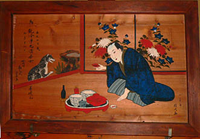
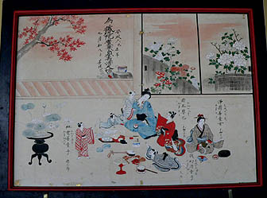

供養絵額；善明寺
遠野市街地の寺町にも供養絵額が多く存在する。
まずは善明寺。境内には桜の花が咲き誇っていた。
本堂内には状態の好い絵額が幾つも飾られていた。
尚、上画像左にある数珠は内陣をぐるりと一囲みする位、大きい。これで百万遍念仏を唱えるにはこの本堂を目一杯使わないと数珠が広がらないだろう。
この寺は遠野絵額界のカリスマ絵額師、外川仕候の絵額がたくさんある。
仕候の住まいはこの寺町のすぐ近所なので、いわばこの寺町界隈の寺はホームみたいなものだったのだろう。
市街地の寺に奉納されている絵額の特徴として、商家の風景が絵かかれている。
上3点はいずれも左上に暖簾が描かれている。
「あかしや」「赤羽根や」「俵田」の文字がそれぞれ反転している。つまり屋内から暖簾を見ている、という訳だ。
お寺の話ではこのような暖簾の屋号は実在した商家のものらしいという。ただ、暖簾を潜っても店がないのが気になるのだが。
いずれも仕候の作。よく銘の下に「六十六画」などとあるが仕候66才の作ということか。
左は薬種屋。奥には薬の抽き出しや壺が並ぶ仕候の作。右は菓子屋。店先に菓子が並んでいる。
こちらは油問屋。帳面を付けている。仕候の作。
エジコに入った子供をあやす図。いずれも戒名は女性のもののみ。右の絵は手前の縁側まで書き込まれた珍しいアングルの絵額。
以上５点は銘はないが、柱に掛かる扇子、三味線、着物の裾の処理等から同じ絵師のものと思われる。
これも仕候の作。柱の扇、三味線、半円形の着物の裾と上の5点との共通点が多い。上記5点も仕候の作ということか。
画面左上に阿弥陀三尊の来迎が描かれている。北上あたりの絵額はこの阿弥陀三尊来迎が中心に描かれているのでその辺からの影響かと思われる。
逆に遠野でこの阿弥陀三尊来迎の絵額が少ないのは浄土信仰が盛んでなかった、という事なのだろうか。

これも仕候の作。チョット首を傾げたポーズがいいですね。
右の男性は庭先の犬に一献傾けているのだろうか。少し寂しげな絵である。

こちらは銘がない。全体的に白っぽい画面はどこか浮き世離れした空気が漂っている。この画風の絵額もあちこちの寺で見かけたので同じ作者なのだろう。
道内には十王像がいた。
絵額と閻魔様のコラボ。冥界アイテムに満たされている割には明るい、のんびりとした雰囲気の寺だった。
長泉寺 常楽寺 西来院 喜清院 光岸寺 善明寺⇒ 瑞応院 柳玄寺
供養絵額トップページに戻る
珍寺大道場 HOME